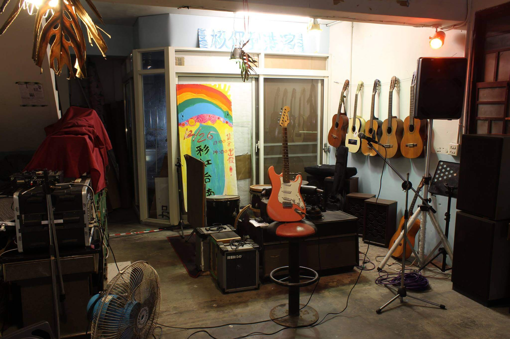
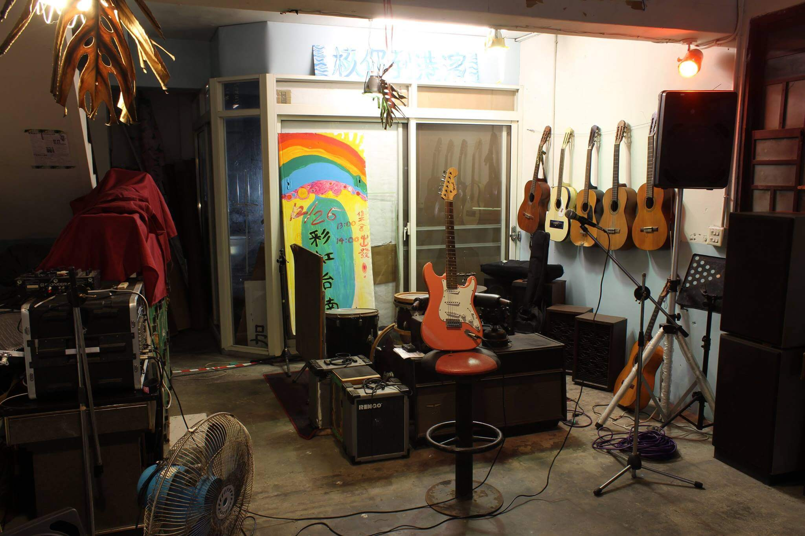

關於我們
2013年能盛興工廠成立，與其他的藝文空間迥異，組成的成員是一群關心生存環境、以社會運動為導向，平均年齡26歲的青年團隊。從一張共同煮食的餐桌，逐漸形成互相關照的大家庭，團隊以公社形式經營空間，以社運、展演、講座、市集等形式促進更多關於環保、自然農法、多元成家等法案的審議推進與推廣教育。
2016年成立藝術村，以能盛興主體自我發現與再建構的計畫作為開端。我們進行了一個研究型的策展想像，以一年三段式主題進行實驗，關注境外至我們生存土地、再由土地聚焦至這微小青年團隊幅散出的效應。能盛興提供房間、工作室、各類技術支援、社群連結以及深厚的在地情感資源。透過邀請探討社會議題的藝術家、策展人和其他藝文工作者與能盛興工廠互動及生活，期待以藝術作為方法，進行更為感性的提問，反思自身處境，並讓這些議題透過藝術話語，跟觀眾互動的過程中獲得延展。進行此類國際藝術文化的學習與交流活動，我們將得以推動更多富含活力，以及深度人文關懷的計畫型藝術項目。
藝術村歡迎每位即將前來駐村或合作的朋友，都能夠在前述的條件下，順利推進標定的創作、策展，與研究計畫。
淮橘為枳rahil
藝術家│丘偉揚 Hew Wai-Yang、張恩滿 Chang En-Man
策展人│邱柏廷 Chiu Po-Ting
展覽時間│06/04 ～07/03開幕時間│02:00 pm 06/04
「啊 檸檬色兮異國暗暝」
─ 黃勁連
在旅行嗎？流浪嗎？還是異地生根了？身處於不同的地理位置，必定接觸不同的政經條件以及不同的文化風土，遭遇到他人的差異現實。人們並就此發展出新的，或保留原有之勞動生命、婚姻關係、文化風俗甚或政治衝突結構。何處是你的應許之地？而所謂的他者，會不會其實就是自己的一個面向？藝術家又怎麼以創作探問此類問題？
公共科診間
藝術家│李奎壁 Li Kuei-Pi、李珮瑜 Lee Pei-Yu、聶克 Nicholas Coulson
策展人│邱柏廷 Chiu Po-Ting、蔡繡如 Showzoo Tsai
展覽時間│08/06 ～09/04
開幕時間│02:00 pm 08/06
告別了舊時代，直線地前進與突破再也不可能，事件往往一波未平一波又起，取代原有的節奏。重大議題正往各個角落發展，並在連鎖反應中彼此糾纏。對於投向它們的研究，還有取樣審視的可能嗎；還有把主體從被動回應現實的狀態，扭轉成自我實現的可能嗎？能盛興的成員們把「工廠」的符號，透過自己的實踐，將其內涵轉換以社群實驗空間。在這裡的藝術活動，也不遺餘力地對社群關係進行探問。
KLEX Experimental Shorts實驗電影巡迴＋3x2 Duos重奏聲音藝術表演
活動日期│2016年5月1日
吉隆坡實驗電影、影像與音樂節 (KLEX)
與能盛興工廠藝術村呈現
~東南亞實驗短片~
本節目由八部馬來西亞、新加坡、以及泰國的實驗短片組成。這八部短片曾在不同年度的吉隆坡實驗電影、影像與音樂節中放映過。
這些影片展現日常生活中的片段， 也微微觸及當地的政治及社會狀況 。 在日常空間中，這些影片以形而上的和敘事的方式探討於對這些場所的各種觀察，概觀地呈現東南亞地區的影像創作者們如何運用實驗性的手法，處理電影短片。
………………………【3x2重奏】………………………
今夜不廢話，全部即興。三組二重奏及最後全部的聲響交融，強大卡司讓所有飛舞的聲音-噪音直接震到您的耳朵裡！
組合:
/
張惠笙/ 郭小慧
劉芳一/ 奈傑布朗
謝奉珍/ 蚪宅
柏林行為藝術工作坊
活動日期│2016年6月18日～6月19日
能盛興工廠藝術村
邀請長駐柏林與德國藝術家進行國際交流
行為藝術是一個使用身體，橫跨時間與空間，理性和感性的藝術表達方式。它跳脫媒介，任何藝術形式皆可存在其中，一種無限大的的可能性。不同于其它藝術形式的物質創造，它同時運用邏輯性概念思考和感官靈性，觸發觀者的的認知并開啟共同創造心得。是種對於個人心靈和社會現況的反射和療愈，一種人類共通語言的溝通程序和經驗分享。
在此工作坊中，由柏林行為藝術協會會長 Lan 和德國行為藝術家 Joy 帶領，從如何從理性和邏輯思考分析身體的可能性，同時感性體驗心理和慾望在行為藝術上的應用，觀察和使用空間和時間元素，與其他藝術表現方式互相比較，從而建立個人行為藝術語言。
聯絡我們
台南市中西區信義街46巷9號
06-221-2362
中午12:00~晚間9:00
ffffactoryy@gmail.com
捐款賬戶：藝工能藝文推廣協會 | 中國信託（822）222540616211
 
